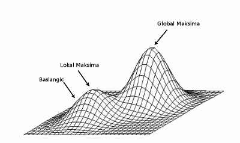
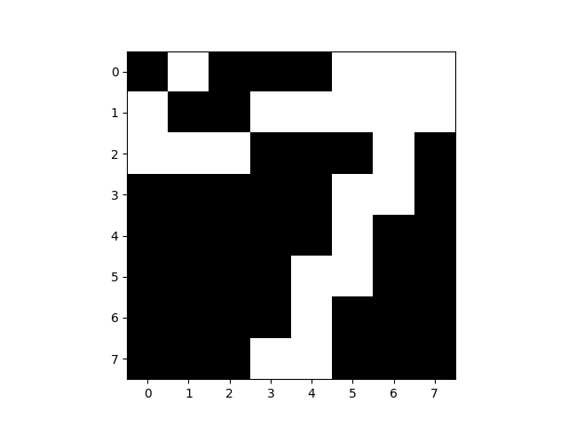
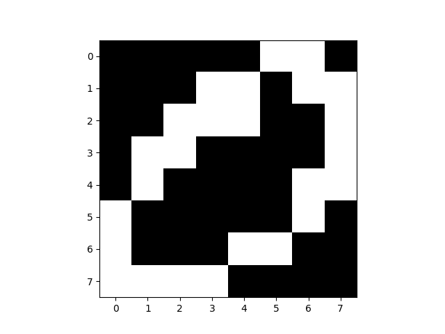
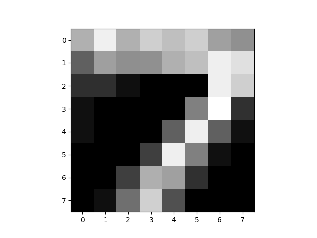
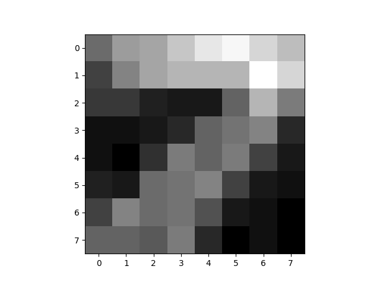
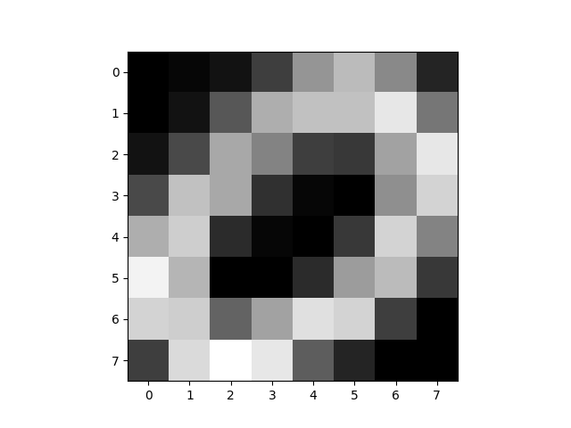

Çok Değişkenli Bernoulli Karışımı (Mixture of Multivariate Bernoulli)
Eğer verimizi, her biri verinin değişik bir bölümünü, yönünü temsil eden bir "dağılım grubu" yani karışım ile modellemek istiyorsak, karışım modellemesi kullanılabilir. Mesela boy ve ağırlık verisinde bayanlar ve erkekler ayrı dağılımlara sahip olabilir, bu durumu modele dahil etmek modelin tahmin gücünü arttırır. Karışım modellerinin güzel bir tarafı kümeleme teknikleri ile başta "bilinmeyen" kümelerinin neye benzediğini bulmaları, ayrıca her veri noktasının bu kümelere olasılıksal olarak aidiyetini, "yakınlığını" hesaplamamızı mümkün kılmaları.
Formel olarak bir karışım dağılımı $f$ her biri ayrı bir dağılım olan $f_1,f_2,...,f_K$ ile $K$ öğeden oluşan, bir yeni dağılımdır diyoruz, eğer
$$ f(x) = \sum_{k=1}^{K} \lambda_k f_k(x) $$
ise, ve $\lambda_k$ karışım oranları, $\lambda_k > 0, \sum_k \lambda_k = 1$ olacak şekilde.
Üstteki model üzerinden zar atılabilecek bir model aynı zamanda (tüm olasılıksal dağılımlar simule edilebilir tabii, ama üstteki için simulasyon oldukça direk), $\lambda$ içindeki olasılıklara göre zar atıp bir karışım öğesi seçilir, daha sonra bu öğenin dağılımına gidilip ona zar attırılır. Bunun olabileceğini ispatlamak için, $Z$ rasgele değişkeninin $\lambda_k$ ile dağıldığını (ayrıksal dağılım) düşünelim, yani
$$ Z \sim Mult(\lambda_1,..,\lambda_k) $$
$f_k(x)$ bir diğer açıdan $f(x|Z=k)$'dir, notasyonel olarak böyle. O zaman,
$$ = \sum_{k=1}^{K} f(x|Z=k)\lambda_k $$
$$ = \sum_{k=1}^{K} f(x|Z=k)P(Z=k) $$
$$ = \sum_{k=1}^{K} f(x,k) $$
$$ = f(x) $$
Yani $\lambda$ olasılıklarına göre $f_k$ seçmek üstteki ifadedeki koşullu olasılık durumuna karşılık geliyor, koşullu olasılık $P(A|B)$ $B$'nin verildiği / bilindiği durumda $A$'nin olasılığı hatırlayacağımız üzere.
Karışımın içindeki dağılımlar parametrik dağılımlar olduğu zaman onları nasıl hesapsal olarak kestiririz? Bir dağılımın parametrelerini kestirebilmek için en iyi yöntemlerden biri maksimum olurluk (maximum likelihood) yöntemi. Olurluk eldeki verinin belli dağılım parametreleri üzerinden olasılığı, yani "verinin olasılığı". Örneklemlerin bağımsız olduğundan hareketle $x_1,x_2,...,x_N$ verisi için olurluk,
$$ \prod_{i=1}^{N} f(x_i;\theta) $$
Her zaman olduğu gibi çarpımı toplam haline döndürmek için log alırız,
$$ \ell(\theta) = \sum_{i=1}^{N} \log f(x_i;\theta) $$ Karışımları da dahil edersek,
$$ = \sum_{i=1}^{N} \log \sum_{k=1}^{K} \lambda_k f(x_i;\theta_k) \qquad (2) $$
Şimdi log olurluğun mesela $\theta_j$'ye göre türevini almayı deneyelim, yani $j$'inci öğenin parametresine göre bir kısmi türev.
$$ \frac{\partial \ell}{\partial \theta_j} = \sum_{i=1}^{N} \frac{1}{\sum_{k=1}^{K} \lambda_k f(x_i;\theta_k) } \lambda_j \frac{\partial f(x_i;\theta_j)}{\partial \theta_j} $$
Bölüm ve bölene $f(x_i;\theta_j)$ ekleyelim, bu sonucu değiştirmez,
$$ = \sum_{i=1}^{N}
\frac{\lambda_j f(x_i;\theta_j)}{\sum_{k=1}^{K} \lambda_k f(x_i;\theta_k)}
\frac{1}{f(x_i;\theta_j)}
\frac{\partial f(x_i;\theta_j)}{\partial \theta_j}
$$
$$ = \sum_{i=1}^{N}
\frac{\lambda_j f(x_i;\theta_j)}{\sum_{k=1}^{K} \lambda_k f(x_i;\theta_k)}
\frac{\partial \log f(x_i;\theta_j)}{\partial \theta_j}
$$
Eğer elimizdeki, karışım olmayan, basit bir parametrik model olsaydı, log olurluk şuna benzeyecekti,
$$ \frac{\partial \log f(x_i;\theta_j)}{\partial \theta_j} $$
Bu formül iki üstteki formülün en sağındaki çarpan sadece. Demek ki "karışım olmak" log olurluğu bir tür belli ağırlıklara göre ortalanan (weighted) normal olurluk haline getirdi. Karışımın log olurluğunu maksimize etmek istiyorsak, bu ağırlığı alınmış olurluğu maksimize etmemiz gerekli. Bu ağırlığın alındığı kısmı iki üstteki formülden çekip çıkartırsak,
$$ w_{ij} = \frac{\lambda_j f(x_i;\theta_j)}{\sum_{k=1}^{K} \lambda_k f(x_i;\theta_k)} $$
Bu ağırlık hesabı $i,j$ için yapılacak. Bu noktaya niçin geldik hatırlayalım, olurluk üzerinden parametreleri hesaplamak istiyoruz. Fakat üstteki formülde $w_{ij}$ hesabı için $\theta_j$'in bilinmesi gerekiyor!
Ne yapacağız? Şu $w_{ij}$'ye yakından bakalım. Daha önce belirttiğimiz gibi $\lambda_j$ $Z$'nin $j$ olma olasılığı, o zaman bölünendeki ifade $X = x_i$ $Z=j$ olmasının ortak (joint) dağılımıdır, yani $P(Z=j,X=x_i)$ diyelim. Koşullu dağılım durumundan başlayarak bu sonuca nasıl erişildiğini görmüştük. Bölendeki ifade ise $f(x_i)$'dir, bir kısmı dağılımdır - tüm $k$'ler üzerinden olasılığın bir bölümü toplanarak kısmen çıkartılmış halidir (marginalized out) - o zaman tüm bölümden ele geçen sonuç $Z=j$'nin $X=x_i$ verildiği, koşullu olasılığıdır,
$$
w_{ij}
= \frac{\lambda_j f(x_i;\theta_j)}{\sum_{k=1}^{K} \lambda_k f(x_i;\theta_k)}
= P(Z=j | X=x_i;\theta)
\qquad (1)
$$
O zaman
$$ \frac{\partial \ell}{\partial \theta_j} = \sum_{i=1}^{N} w_{ij} \frac{\partial \log f(x_i;\theta_j)}{\partial \theta_j} $$
$w_{ij}$ ile, veriye göre, $Z$'nin sonsal (posterior) hesaplamış oluyoruz. Yani karışımsal modeli hesaplarken bir ağırlıksal olurluk hesabı yapıyoruz, ki bu ağırlıklar sonsal dağılımlardan gelen değerlere ihtiyaç duyuyor. Ama bu sonsal dağılımlar da aslında hesaplamaya çalıştığımız parametrelere ihtiyaç duyuyor, yani bir kördüğüm!
Ama şöyle bir deyiş vardır; kimisine kördüğüm gibi gözüken, bir başkasına ardışıl yaklaşıksal prosedür gibi gözükür (succcessive approximation procedure) [hoca şakadan uydurdu bu deyişi, ama teknik doğru]. Demek istiyorum ki eğer kördüğümde takılı kaldıysak, bir taraf için tahmin yapıp diğer tarafı hesaplarız, sonra bu hesaplanan değerleri kullanarak ilk tarafı hesaplarız. Bunu sürekli devam ettiririz.
Ünlü Beklenti-Maksimizasyon (Expectation-Maximization -EM-) prosedürü tam da bunu yapıyor. Detaylar için [3, sf. 450]. EM özyinesel çalışan bir rutindir, birkaç adımda sonuca erişir, ve her adımda olurluğu iyileştirmesi ve yerel maksimuma erişmesi garantidir; Tabii başlangıç noktasına göre bu yerel maksimum tamamın (global) maksimumu olmayabilir, o zaman EM yerel maksimumda takılıp kalmış olur (stuck at local maxima), bu sebeple EM'i birkaç değişik rasgele başlangıç noktasından başlatıp en iyi yerel maksimimumu, yani en iyi olurluğu veren parametreleri bulmak iyi bir yaklaşımdır.

$w_{ij}$'ye Değişik bir Yönden Erişmek
$\theta_j$ hesabı için formülasyonu biraz değiştirmek lazım. Tüm ortak dağılımı yazalım, ayrıca $z_{ik}$ değişkenini katalım, $Z$ değişkeni multinom idi, onu 0/1 değerleri içeren vektörel olarak tasarlayalım, yani $z$ veri noktası $i$ ve bileşen $k$ için, $Z_i$ ise $i$'inci nokta için
$$ P(X_i = x_i, Z_i=k) =
\prod_{k=1}^{K} \big( f(x_i;\theta_k)P(Z_i=k) \big)^{z_{ik}} $$
Şimdi log alalım,
$$ = \sum_{k=1}^{K} z_{ij} \ln \big( f(x_i;\theta_k)P(Z_i=k) \big) $$
Tüm veri noktaları için
$$ \ell(\theta) = \sum_{i=1}^{N} \sum_{k=1}^{K} z_{ij} \ln \big( f(x_i;\theta_k)P(Z_i=k) \big) $$
$$
= \sum_{i=1}^{N} \sum_{k=1}^{K} z_{ik}
\big( \ln f(x_i;\theta_j) + \ln(\lambda_j) \big)
$$
Şimdi bu ifadenin beklentisini almamız lazım; bunun sebebi EM'in yakınsaması (convergence) ile alakalı [3, sf. 450]. Beklentiyi "eksik" olan yani bilinmeyen küme ataması üzerinden alıyoruz, $\theta_k$,$P(Z_i=k)$ ve $x_i$ sabit olarak kalıyor,
$$
E[l(\theta)] = \sum_{i=1}^{N} \sum_{k=1}^{K} E[z_{ik}]
\big( \ln f(x_i;\theta_j) + \ln(\lambda_j) \big)
$$
Hesaplanacak tek şey burada $E[z_{ik}]$. Peki bu beklenti nedir?
$$ E[z_{ik}] = 1 \cdot P(z_{ik}=1 | x_i) + 0 \cdot P(z_{ik}=1 | x_i) $$
$$= P(z_{ik}=1 | x_i) $$
Bu formül (1)'deki formülün aynısıdır! Yeni notasyon üzerinden tabii; o zaman
$$ E[z_{ik}] = w_{ik} $$
Yani
$$ E[l(\theta)] = \sum_{i=1}^{N} \sum_{k=1}^{K} w_{ik} \big( \ln f(x_i;\theta_j) + \ln(\lambda_j) \big) \qquad (4) $$
EM Hesap Adımları
$w_{ij}$ hesabına EM'in "beklenti adımı (expectation step)" ismi veriliyor, çünkü görüldüğü gibi beklenti alıyoruz. Bu adım için $\theta$'nin bilindiği farz edilir, bilinmiyorsa, ki hesap döngüsünün ilk adımında durum böyledir, o zaman rasgele $\theta$ kullanılır. Döngünün diğer adımlarında döngünün bir önceki adımındaki değerler kullanılır.
Maksimizasyon adımı için bilinen $w_{ij}$ için $\theta$'nin hesaplanması gerekir; bu adıma maksimizasyon adı verilmesi de mantıklı, çünkü altta da görüleceği üzere, kısmi türevler alıp sıfıra eşitleyerek maksimal değerler hesaplayacağız.
Bu hesap şöyle: Eğer (4) çok değişkenli Bernoulli modeli içinse, ki $x_{id}$ $i$'inci veri noktasının $D$ boyutlu Bernoulli için $d$'inci hücresinin değeri, $\theta_{jd}$ ise $j$'inci karışım öğesinin $D$ boyut içinden $d$'inci olasılık değeri olsun, $f$ içinde yerine koyunca ve $f$ üzerinde log etki yapınca çarpım yine toplam olur,
$$ = \sum_{i=1}^{N} \sum_{k=1}^{K} w_{ik} \bigg[ \ln(\lambda_k) + \sum_{d=1}^{D} \ln \big( \theta_{kd}^{x_{id}} (1-\theta_{kd})^{1-x_{id}} \big) \bigg] $$
$$ E[l(\theta)]= \sum_{i=1}^{N} \sum_{k=1}^{K} w_{ik} \bigg[ \ln(\lambda_k) + \sum_{d=1}^{D} x_{id} \ln \theta_{kd} + (1-x_{id}) \ln (1-\theta_{kd}) \bigg] $$
Şimdi $\theta_{kd}$ hesabı için ona göre türevi alıp sıfıra eşitleriz,
$$ \frac{\partial }{\partial \theta_{kd}} E[l(\theta)] = w_{ik} \sum_{i=1}^{N} x_{id} \frac{\partial }{\partial \theta_{kd}} (\ln \theta_{kd}) + \frac{\partial }{\partial \theta_{kd}}\big[ (1-x_{id}) \ln (1-\theta_{kd})\big] = 0 $$
$$ \sum_{i=1}^{N} w_{ik} ( \frac{x_{id}}{\theta_{kd}} - \frac{1-x_{id}}{1-\theta_{kd}} ) = 0 $$
$$ \sum_{i=1}^{N} \frac{w_{ik} x_{id}}{\theta_{kd}} = \sum_{i=1}^{N} \frac{w_{ik}-w_{ik}x_{id}}{1-\theta_{kd}} $$
$$ \frac{1}{\theta_{kd}}\sum_{i=1}^N w_{ik} x_{id} = \frac{1}{1-\theta_{kd}}\sum_{i=1}^{N} w_{ik}-w_{ik}x_{id} $$
$$ \frac{1-\theta_{kd}}{\theta_{kd}}\sum_{i=1}^N w_{ik} x_{id} = \sum_{i=1}^{N} w_{ik}-w_{ik}x_{id} $$
$$ \frac{1-\theta_{kd}}{\theta_{kd}} = \frac{\sum_i w_{ik}-\sum_i w_{ik}x_{id}}{\sum_i w_{ik} x_{id}} $$
$$ \frac{1}{\theta_{kd}} - 1= \frac{\sum_i w_{ik}}{\sum_i w_{ik} x_{id}} - 1 $$
$$ \hat{\theta}_{kd}= \frac{\sum_i w{ik} x_{id}}{\sum_i w_{ik}} $$
Ya da
$$ \hat{\theta}_{k}= \frac{\sum_i w{ik} x_{i}}{\sum_i w_{ik}} $$
$\lambda_j$ Hesabı
Şimdi $\lambda_j$'ye göre bir türev almamız, sıfıra eşitlememiz ve çözmemiz lazım. Tek bir pürüz $\sum_k \lambda_k = 1$ olması şartı, yani tüm ağırlıkların toplamı 1'e eşit olmalı ve bu şartı bir şekilde denklemlere dahil etmemiz lazım. Lagrange çarpan tekniği burada kullanılır [1, sf. 395].
$$ \frac{\partial }{\partial \lambda_j} \big[ \ell(\theta) + \alpha (\sum_k \lambda_k - 1) \big] $$
Ondan önce olurluğun $\lambda_j$'ye göre kısmi türevi lazım, (1) formülüne dönersek, ve kısmi türevi alırsak,
$$ \frac{\partial \ell}{\partial \lambda_j} = \sum_{i=1}^{N} \frac{f(x_i;\theta_j)}{\sum_{k=1}^{K} \lambda_k f(x_i;\theta_k) } = \sum_{i=1}^{N} \frac{f(x_i;\theta_j)}{f(x_i) } $$
O zaman iki üstteki türev su hale gelir, sıfıra da eşitlersek,
$$
\sum_{i=1}^{N} \frac{f(x_i;\theta_j)}{f(x_i) } + \alpha = 0
$$
Biraz düzenleyip iki tarafı da $\lambda_j$ ile çarpalım,
$$ \sum_{i=1}^{N} \frac{f(x_i;\theta_j) \lambda_j}{f(x_i) } = - \alpha \lambda_j $$
Eşitliğin sol tarafında toplam içinde yine (1)'de görülen $w_{ij}$'ye eriştik! Yerine koyalım,
$$ \sum_{i=1}^{N} w_{ij} = - \alpha \lambda_j \qquad (3) $$
Şimdi tüm öğeler / kümeler üzerinden bir toplam alalım (yani $\sum_k$'yi her iki tarafa da uygulayalım),
$$ \sum_{k=1}^{K} \sum_{i=1}^{N} w_{ij} = - \alpha \sum_{k=1}^{K} \lambda_j $$
$ \sum_k \lambda_j = 1 $, $\sum_j w_{ij} = 1 $ olduğu için,
$$ N = - \alpha $$
Üstteki formülü (3) içine koyarsak, ve tekrar düzenlersek,
$$ \lambda_j = \frac{\sum_{i=1}^{N} w_{ij}}{N} $$
import numpy as np
def loginnerprodexp(t,a):
eps=1e-15
t[t>0.] = 1
tmp = np.dot(t,np.exp(a)) + eps
b=np.log(tmp)
return b
def logsumexp(a):
return np.log(np.sum(np.exp(a), axis=0))
def do_EMmixtureBernoulli(Y,K,iter,tol):
N,D=Y.shape
OMY=1+(-1*Y) # "One minus Y", (1-Y)
tmp=np.random.rand(N,K)
tmp2=np.sum(tmp,axis=1).reshape((N,1))
tmp3=np.tile(tmp2,(1,K))
lR=np.log(np.divide(tmp, tmp3))
L = []
for i in range(iter):
# lPi log Mixture params Kx1
lPi=np.tile(-1 * np.log(N),(K,1))+logsumexp(lR).T.reshape((K,1))
const=np.tile(logsumexp(lR).T.reshape((K,1)),(1,D))
# lP log Bernoulli params KxD
lP=loginnerprodexp(Y.T,lR).T - const
# lOMP log(1-P), also KxD
lOMP=loginnerprodexp(OMY.T,lR).T-const
# *** E-step
lR=np.tile(lPi.T,(N,1))+np.dot(Y,lP.T) + np.dot(OMY,lOMP.T) # + const
Z=logsumexp(lR.T)
lR=lR-np.tile(Z.T.reshape((N,1)),(1,K))
L.append(np.sum(Z))
if (i>1):
if np.abs(L[i]-L[i-1]) < tol: break
iters = i
return lR,lPi,lP,L,iters
def EMmixtureBernoulli(Y,K,iter,tol,attempts):
Lbest = -np.inf
eps=1e-15
# EM'i farkli noktalardan birkac kere (attempts kadar) baslat
# En iyi sonucun sonuclarini elde tut
for attempt in range(attempts):
lRtmp,lPitmp,lPtmp,L,iters = do_EMmixtureBernoulli(Y,K,iter,eps)
if L[iters]>Lbest:
lR=lRtmp
lPi=lPitmp
lP=lPtmp
Lbest=L[iters]
itersbest=iters
aic = -2*Lbest + 2*lP.shape[0]*lP.shape[1]
return lR, lPi, lP, Lbest, aic
Kodda kullanılan log-toplam-exp numarası için Ekler'e bakılabilir.
Örnek olarak ikisel olarak siyah/beyaz olarak kodlanmış üç tane farklı sayının 8x8 boyutundaki imajlarını içeren veriyi kullanabiliriz. Küme sayısını 3 olarak verdik.
Veriden bazı örnekler görelim,
Y = np.loadtxt('binarydigits.txt')
plt.imshow(Y[4,:].reshape((8,8),order='C'), cmap=plt.cm.gray)
plt.savefig('mixbern_04.png')
plt.imshow(Y[7,:].reshape((8,8),order='C'), cmap=plt.cm.gray)
plt.savefig('mixbern_05.png')
 
import numpy as np
import mixbern
K=3; iter=40; eps=1e-15; attempts=5
lR,lPi,lP,lbest,aic = mixbern.EMmixtureBernoulli(Y,K,iter,eps,attempts)
labels = np.argmax(lR.T,axis=0)
print labels
print 'log olurluk', lbest, 'aic', aic
[0 0 0 2 2 1 2 0 2 2 1 1 2 1 0 0 0 1 0 1 1 0 0 1 0 2 0 2 1 1 1 2 0 0 0 0 0
0 1 2 0 0 0 0 0 1 2 0 0 2 2 2 1 2 1 2 2 0 0 1 2 1 2 1 0 1 0 0 2 2 2 1 0 2
2 2 0 1 1 2 2 0 1 0 2 0 0 2 2 0 0 2 0 2 1 2 0 1 0 2]
log olurluk -3049.95050527 aic 6483.90101054
Elde edilen sonuçlara göre, ve paylaştığımız say resimlerindeki sıraya bakarsak, mesela ilk üç sayı imajını birbirine benziyor olması lazım. Yine aynı sırada gidersek Daha sonra 4. ve 6. sayıların birbirine benziyor olması lazım, ve 8. imajın ilk üç imaja benziyor olması lazım, vs. Resimlere bakınca bunun hakikaten böyle olduğunu görüyoruz. Demek ki kümeleme başarıyla gerçekleştirilmiş.
Her veri noktasının üyeliğini için $w_{ij}$'ye baktık (kodda lR, üyeliğin
log'u), $i$ hangi kümeye en fazla yakın ise (yüksek olasılık) bunu bir aidiyet
olarak kabul ettik.
Daha ilginç bir hesap şu; her $\theta_k$ (kodda lP, log'u alınmış
parametreler) artık bir kümeyi "temsil" ediyor (multinom bir değişken bu
hatırlarsak) ve bu dağılımların her biri, bir nevi "şablon" haline dönüşmüş
olmalı; öyle ya, $Z$ ile zar atıyoruz bir dağılım seçiyoruz, sonra o dağılıma
bir daha zar attırıyoruz, ve herhangi bir sayının imajını üretmek istiyorsak
şablon gerçeğine oldukça yakın olmalı! Yani mantıki olarak düşünürsek, eğer
model veriye iyi uymuş ise, her şablon dağılımının 0,7,5 sayılarının şeklini
aşağı yukarı temsil etmesini bekleriz. Kontrol edelim,
dim = (8,8)
templates = np.exp(lP)
digit0 = np.reshape(templates[0,:], dim,order='C')
plt.imshow(digit0, cmap=plt.cm.gray)
plt.savefig('mixbern_01.png')
digit1 = np.reshape(templates[1,:], dim,order='C')
plt.imshow(digit1, cmap=plt.cm.gray)
plt.savefig('mixbern_02.png')
digit2 = np.reshape(templates[2,:], dim, order='C')
plt.imshow(digit2, cmap=plt.cm.gray)
plt.savefig('mixbern_03.png')
  
Hakikaten de şeklen benziyorlar!
Kaynaklar
[1] Zaki, Data Mining and Analysis: Fundamental Concepts and Algorithms
[2] Alfons Juan, Enrique Vidal, Bernoulli mixture models for binary images
[3] Shalizi, Advanced Data Analysis from an Elementary Point of View
[4] Bishop, C., Pattern Recognition and Machine Learning
Yukarı